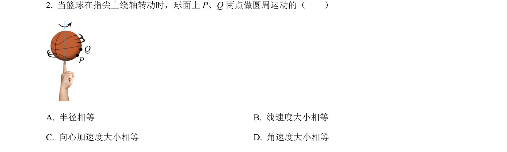
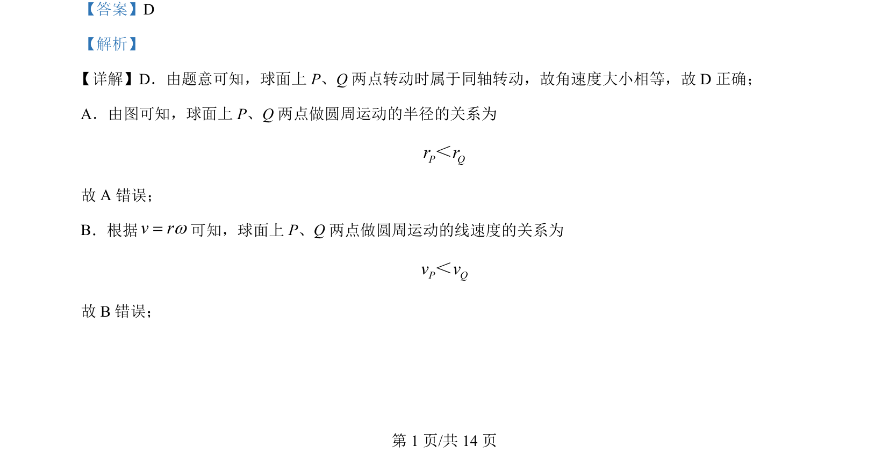
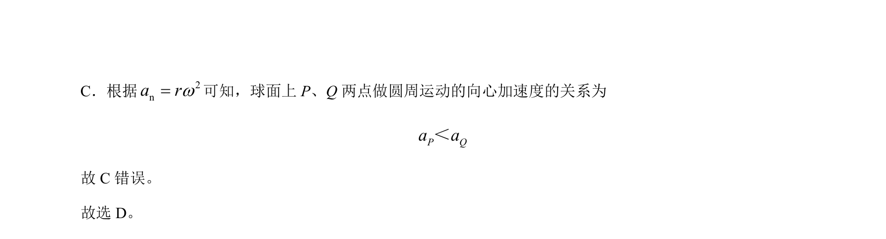

考点：同轴转动 角速度 线速度 向心加速度

同轴转动的两点角速度相等，结合半径大小比较线速度和向心加速度。


📄 原 PDF 第 1 页：
素材/真题/吉林/2008-2024·（吉林）物理高考真题/2024年高考物理试卷（辽宁）（解析卷）.pdf
【答案】D 【解析】 详解】D．由题意可知，球面上 P、Q 两点转动时属于同轴转动，故角速度大小相等，故 D 正确； A．由图可知，球面上 P、Q 两点做圆周运动的半径的关系为 P Qr r＜ 故 A 错误； B．根据v rw=可知，球面上 P、Q 两点做圆周运动的线速度的关系为 P Qv v＜ 故 B错误； 【